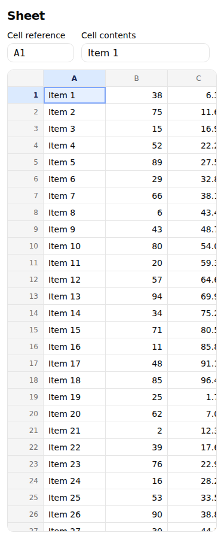
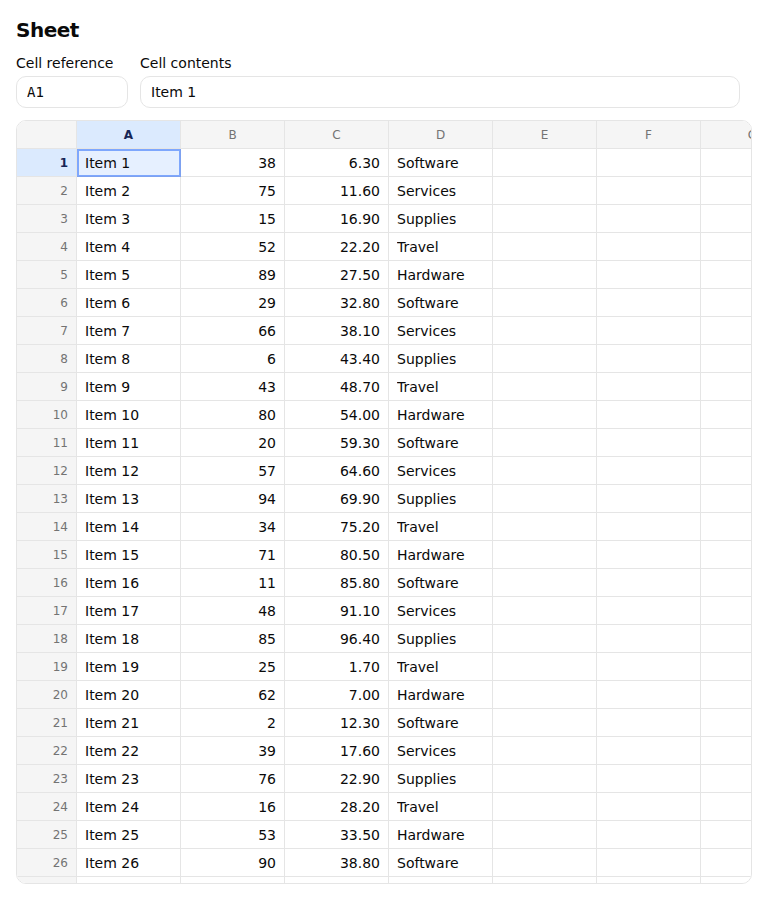
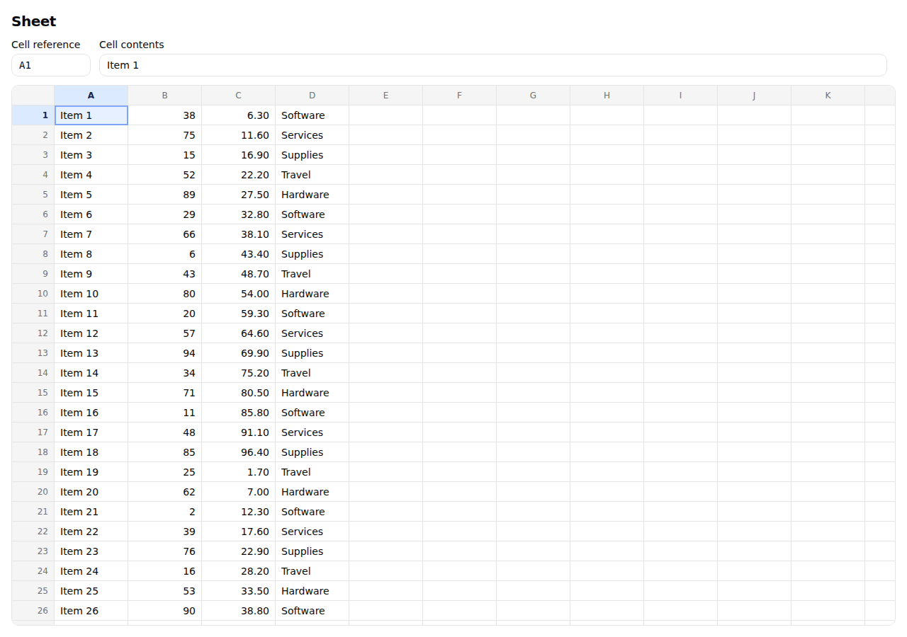
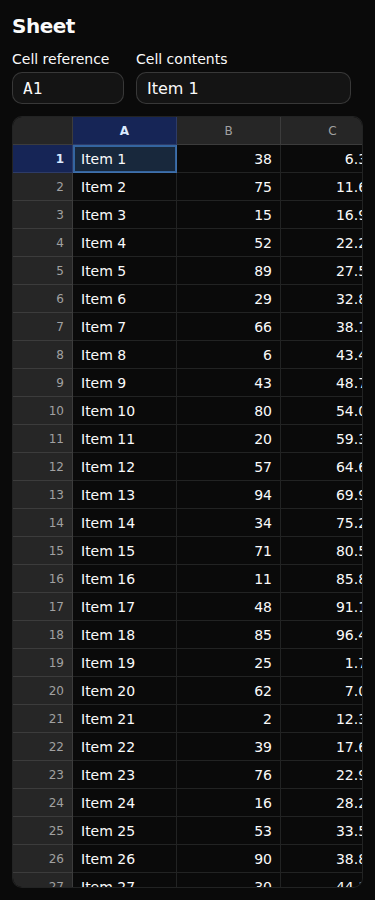
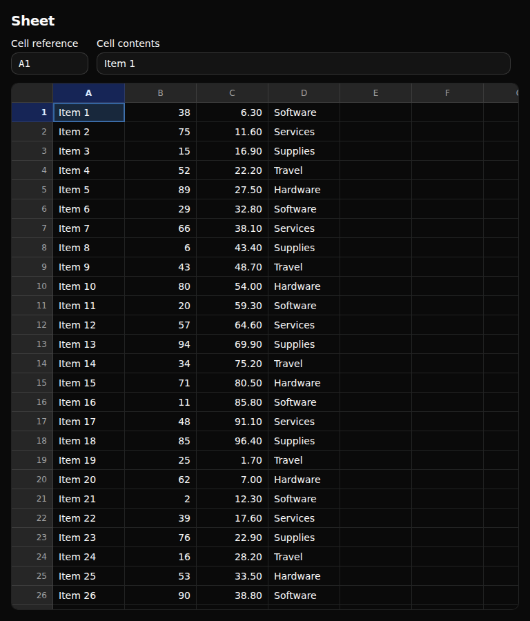
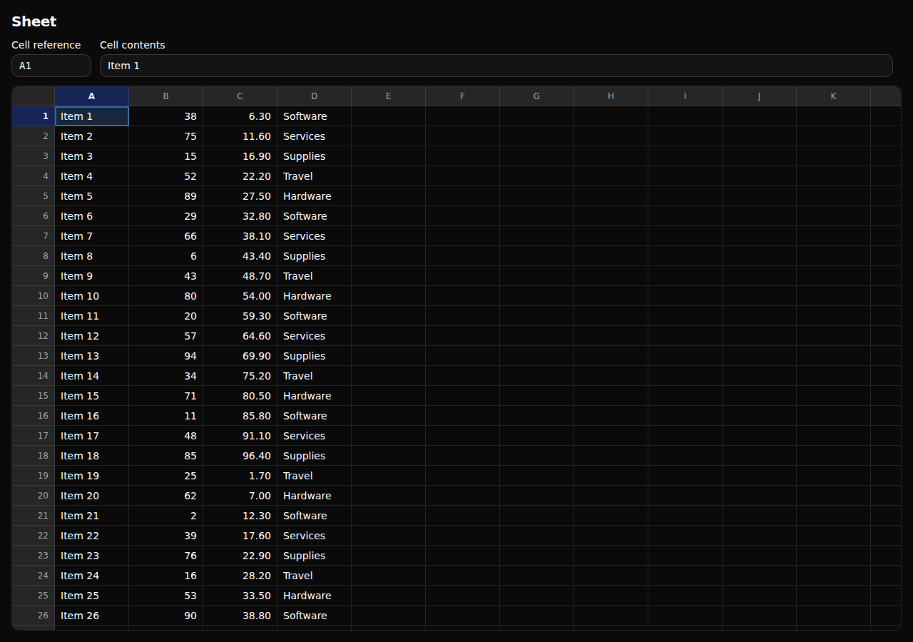

Quality
- Build
- yes
- Typecheck
- yes
- Keyboard-only flow
- yes
- Axe rules violated
- 3
- Console errors at load
- 0
Time and process
- Wall clock
- 7.2 min
- Model time
- 6.1 min
- Tool time
- 1.1 min
- Turns
- 23
- Tool calls
- 22
- Builds (failed)
- 4 (1)
- Vendor skill used
- no
Tokens and cost
- Cost
- $1.529
- Input (uncached)
- 42
- Cache read
- 1,116,574
- Cache write
- 66,512
- Output
- 38,648
claude-code total_cost_usd
Output
- Code lines added
- 1,140
- Bundle (gzip)
- 98.3 KB
- Dependencies added
- none
claude-opus-5-5, CLI 2.1.325; shadcn 4.23.0, @base-ui/react 1.9.0, lucide-react 1.73.0.
Prompt
The complete prompt the agent received, verbatim (1,361 words). Both models got exactly the same text for this task; the shadcn/ui and UI SDK versions differ only in the Stack paragraph. Raw markdown
Show the full prompt
You are working in a frontend project in the current directory. Complete the task below on your own in this one session: nobody will answer questions or give feedback, so make reasonable decisions and finish. When you are done, the project must build with npm run build.
Stack
Vite + React 19 + TypeScript + Tailwind CSS v4, with shadcn/ui already initialised (components.json). Add shadcn/ui components with its CLI as you need them. See AGENTS.md / CLAUDE.md for project notes.
Rules
- UI only. There is no real backend, server or authentication. Use the mock API in
src/mock/api.tsfor all data; don't edit anything insrc/mock/. If you need something it doesn't cover, add your own in-memory placeholder in a separate file. - Build the whole task as the app's single page (replace
src/App.tsx). No routing is needed. - You may add utility libraries (for example drag-and-drop, virtualization, positioning or table-state helpers). Don't add a ready-made implementation of the widget you are asked to build (for example a data grid or spreadsheet component, a node-graph or flow-canvas library, or a calendar/scheduler suite).
- It must work in light and dark mode (see the dark mode note in AGENTS.md / CLAUDE.md) and at mobile width (375 px) as well as desktop.
- Follow the accessibility requirements in the task, including any accessibility contract: exact roles, accessible names and attributes are part of the task.
- Keep
base: './'invite.config.tsso the build works from a subpath.
Task: Spreadsheet grid
Build a single-page spreadsheet editor with 10,000 rows and 26 columns (A–Z). Data comes from the mock API in src/mock/api.ts (loadSheet, saveCells, plus helpers columnName, parseAddress, formatAddress, ROW_COUNT, COLUMN_COUNT). Values are plain strings; there are no formulas. Use the ARIA grid pattern (WAI-ARIA Authoring Practices, "Grid" and "Data Grid") as the reference for keyboard and focus behavior.
Layout
- A heading "Sheet".
- Above the grid: a text field named "Cell reference" (shows the active cell like "C7", or the selected range like "B2:D5") and a text field named "Cell contents" (shows the raw value of the active cell).
- The grid, which fills the remaining space and scrolls inside its own container. The column header row and the row number column stay visible while scrolling.
- While the sheet loads, show "Loading sheet…".
Accessibility contract
The tests rely only on this contract, so follow it exactly:
- The grid element has
role="grid", the accessible name "Spreadsheet",aria-rowcount="10001",aria-colcount="27"andaria-multiselectable="true". - The header row has
role="row"andaria-rowindex="1". Its first cell is the top-left corner (role="columnheader",aria-colindex="1", may be empty). Then 26 cells withrole="columnheader",aria-colindex2 to 27 and the text "A" to "Z". - Data row n (1-based) has
role="row"andaria-rowindex= n + 1. Its first cell hasrole="rowheader",aria-colindex="1"and the text n. Then 26 cells withrole="gridcell",aria-colindex2 to 27, whose text content is the cell value. - Rows are virtualized: at most 200 data rows are in the DOM at any time. Every row and cell that is in the DOM carries the indices above.
- The grid is a single Tab stop. Exactly one cell is active. Use either a roving tabindex (the active gridcell has DOM focus) or
aria-activedescendanton the focused grid element pointing to the active gridcell's id. When focus enters the grid for the first time, A1 is active. - Every rendered gridcell in the selected range has
aria-selected="true"; other rendered gridcells havearia-selected="false"or noaria-selected. - While editing, the editor is a text field with the accessible name "Edit <address>" (for example "Edit B2"), and it has DOM focus.
Navigation
- Arrow keys move the active cell by one, stopping at the edges.
- Home / End move to the first / last column of the row. Ctrl+Home / Ctrl+End move to A1 / Z10000.
- Ctrl+Arrow (Cmd+Arrow on macOS) moves to the edge of the sheet in that direction.
- PageDown / PageUp move by the number of rows visible in the grid.
- Moving to a cell that isn't rendered yet scrolls it into view and renders it; the active cell is always fully visible after keyboard navigation.
- Typing an address (like "M5000") into "Cell reference" and pressing Enter makes that cell active, scrolls to it, and moves focus to the grid.
- Scrolling with the mouse wheel or scrollbar doesn't change the active cell. If the active cell's row is scrolled out of the DOM, keyboard focus stays in the grid (never falls to
<body>), and the next arrow key continues from the active cell and scrolls it back into view.
Selection
- Shift+Arrow, Shift+Home/End, Shift+Ctrl+Arrow and Shift+PageUp/PageDown extend a rectangular selection from the anchor cell. A plain navigation key collapses the selection to the new active cell.
- Click makes a cell active; Shift+click extends the selection; dragging across cells selects the rectangle.
- Ctrl/Cmd+A selects the whole sheet.
- The selected range is visibly highlighted and the active cell has a distinct outline.
Editing
- Enter or F2 starts editing the active cell with its current value. Typing a printable character starts editing with that character replacing the value. Double-click starts editing.
- While editing, Enter commits and moves down, Shift+Enter commits and moves up, Tab commits and moves right, Shift+Tab commits and moves left, and Escape cancels, restoring the previous value. In all cases focus returns to the grid. Arrow keys move the caret inside the editor. Clicking another cell commits.
- Delete or Backspace clears every cell in the selection.
- Editing "Cell contents" and pressing Enter commits the new value to the active cell.
- Ctrl/Cmd+C copies the selection to the clipboard as tab-separated values (rows separated by newlines, cells by tabs). Ctrl/Cmd+X copies and then clears the selection. Ctrl/Cmd+V pastes tab-separated text with its top-left at the active cell (or the top-left of the selection), clipped to the sheet, and selects the pasted range.
- Every change caused by one action (a commit, a clear, a cut, a paste) is saved with one
saveCellscall containing every changed cell (an empty string clears a cell). If saving fails, keep the new values on screen and show an alert (role="alert") saying "Couldn't save changes" with a "Retry" button that sends the unsaved changes again.
Responsive and themes
At 375 px wide the grid fills the width and scrolls inside its container; the page itself doesn't scroll horizontally. Everything must look right and remain readable in light and dark mode.
Acceptance criteria
- The grid follows the accessibility contract: roles, name,
aria-rowcount,aria-colcount, row and column indices, headers. - Rows are virtualized (at most 200 data rows in the DOM) and the header row and row numbers stay visible while scrolling.
- The grid is one Tab stop; A1 is active on first focus; Tab moves focus out of the grid.
- Arrow keys move the active cell and stop at the edges; "Cell reference" and "Cell contents" follow the active cell.
- Home/End and Ctrl+Home/Ctrl+End move to the row ends and the sheet corners, rendering cells that weren't rendered.
- PageDown/PageUp move by a page and keep the active cell visible.
- Entering an address in "Cell reference" jumps to that cell, renders it and focuses the grid.
- Shift+Arrow extends a rectangular selection exposed through
aria-selected; "Cell reference" shows the range. - Shift+click and mouse drag select rectangular ranges.
- Enter, F2, typing and double-click start editing with an editor named "Edit <address>"; Enter and Tab commit and move; Escape cancels and restores.
- Delete clears the selection; each change calls
saveCellsonce with all changed cells. - Copy puts the selection on the clipboard as tab-separated values; paste fills a range from the active cell; cut clears the source.
- Focus stays in the grid when the active cell scrolls out of the DOM, and the next arrow key brings it back into view.
- A failed save shows "Couldn't save changes" with "Retry", which saves again.
- At 375 px wide the page doesn't scroll horizontally; light and dark mode both render readable content.
Screenshots
Taken by the evaluator at three widths in light and dark mode.





